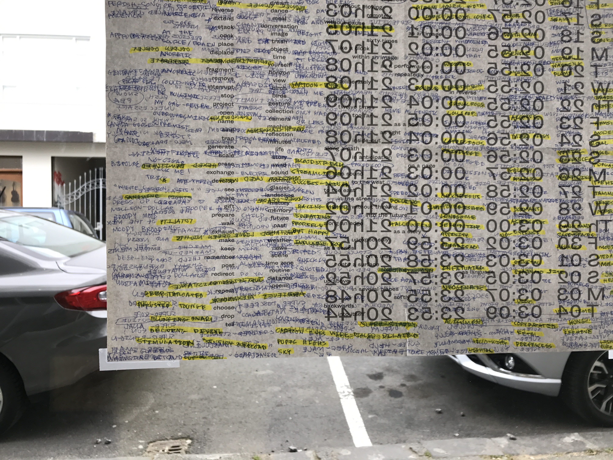
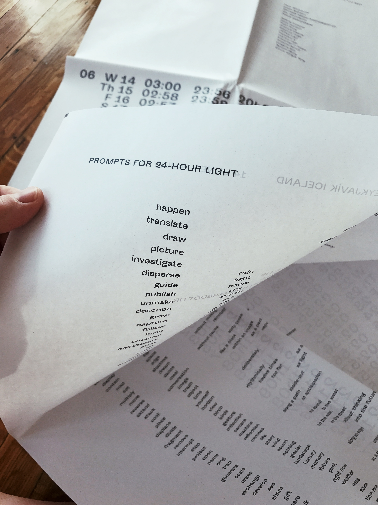
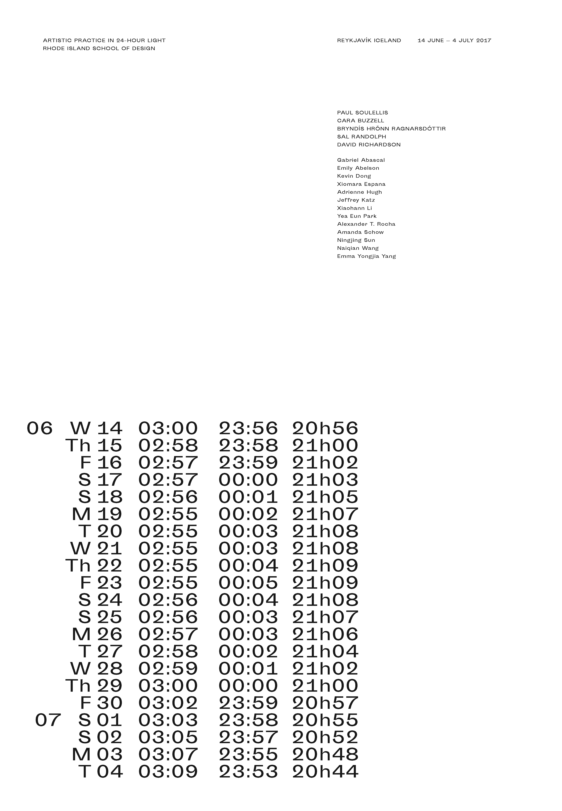
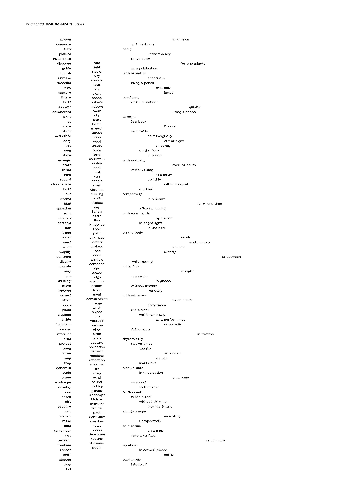
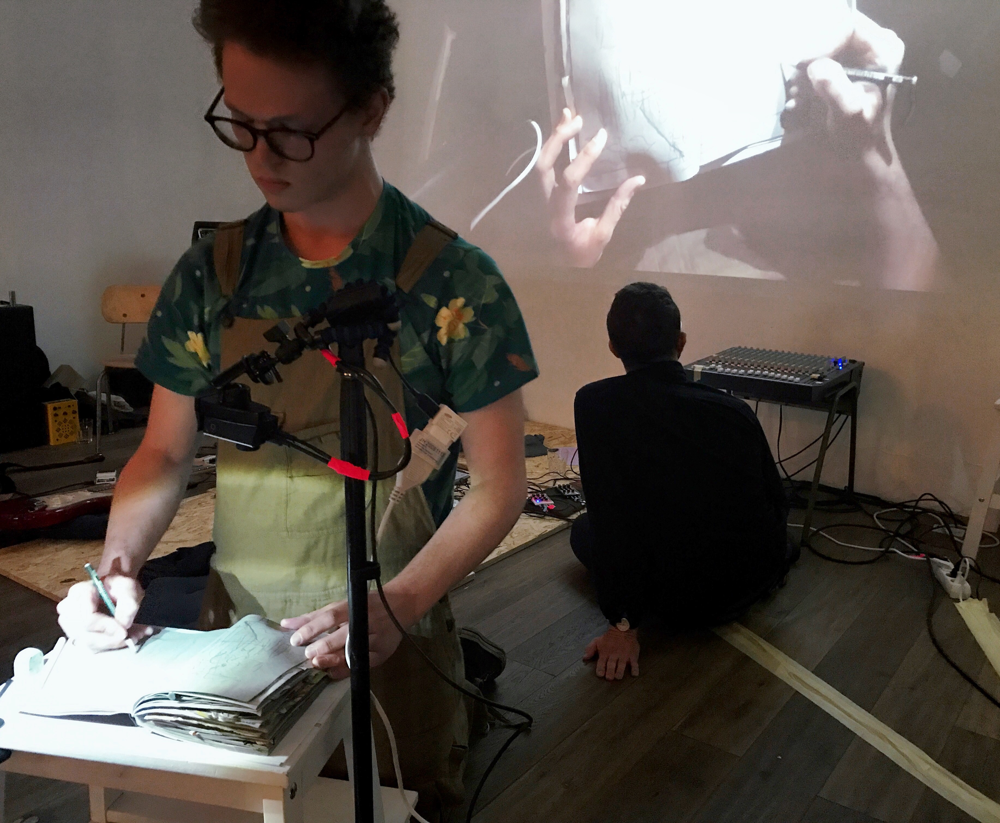
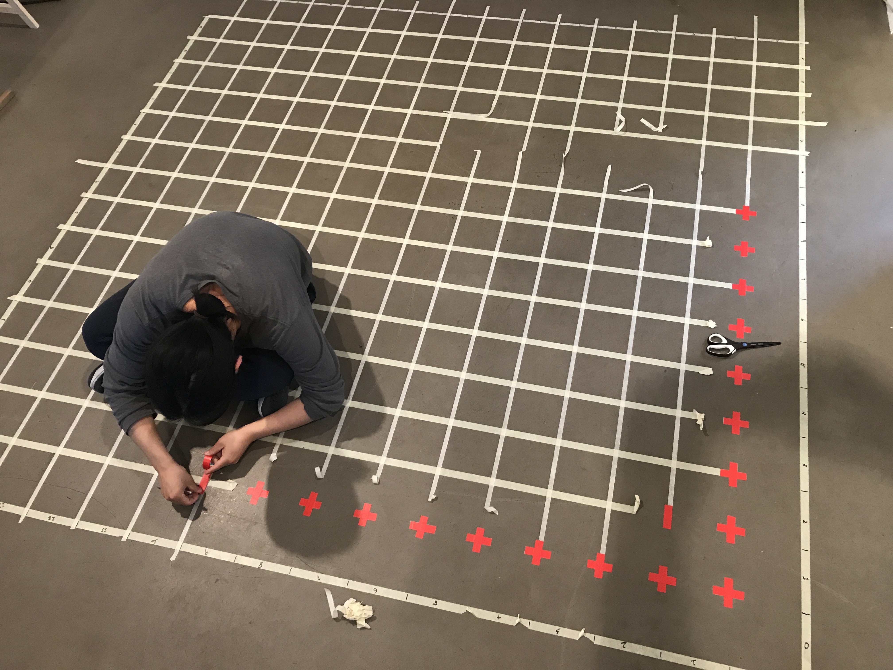

Prompts for 24-Hour Light (2017)
with Sal Randolph

Prompts for 24-Hour Light was a teaching tool created for “Artistic Practice in 24-Hour Light,” a 3-week Rhode Island School of Design summer travel course taught by Paul Soulellis in Reykjavík, Iceland (June 14–July 4). Students used the newsprint sheet to self-generate prompts that became the basis for a public exhibition and happening at Mengi on the final evening of the course. Prompts for 24-Hour Light was designed in collaboration with Sal Randolph, who conducted a one-week performance workshop with the students during the course with David Richardson (dispersed holdings).
20.5 in. x 29.5 in. 2-page folded newsprint sheet
Download PDF




